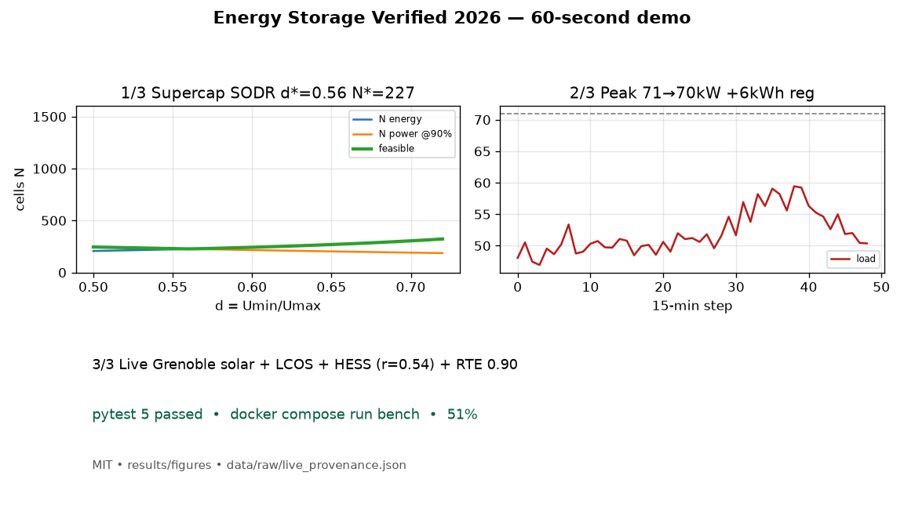
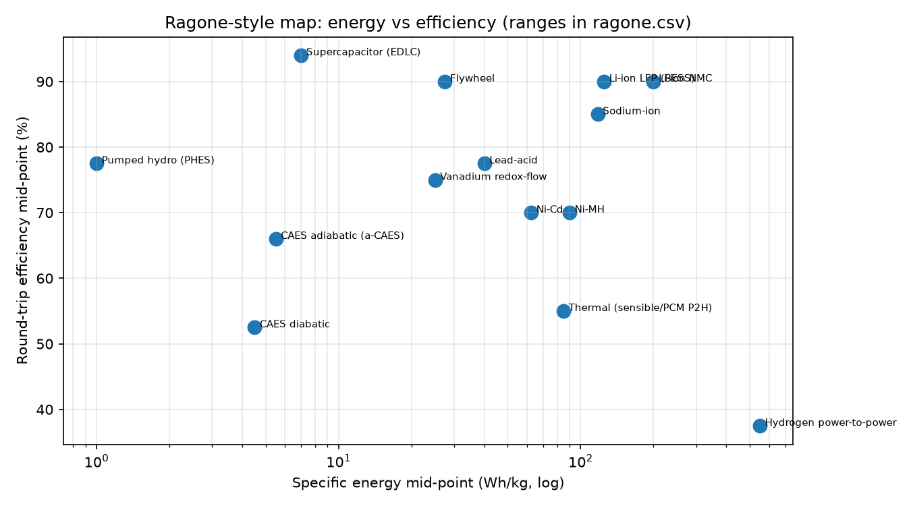
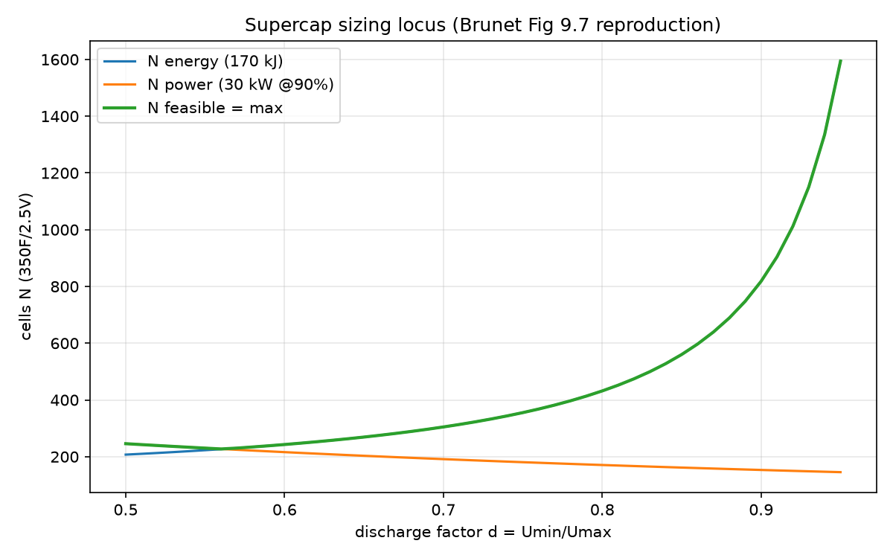
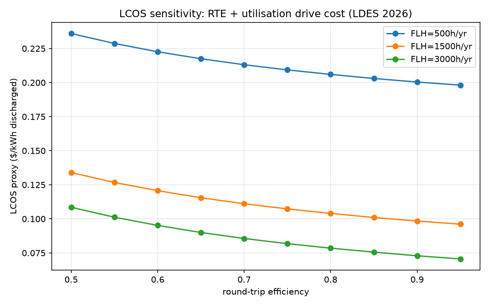
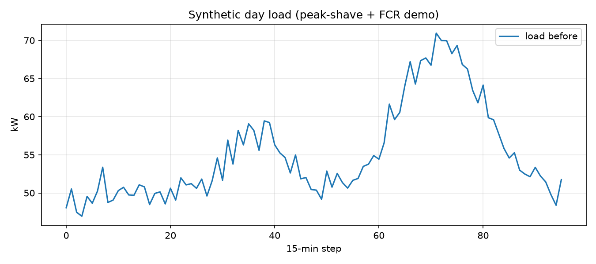
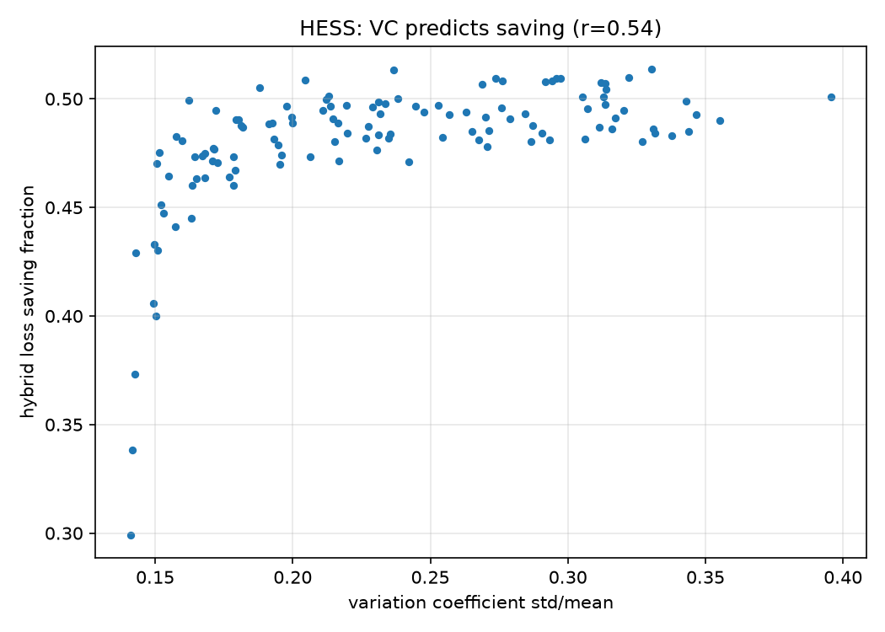
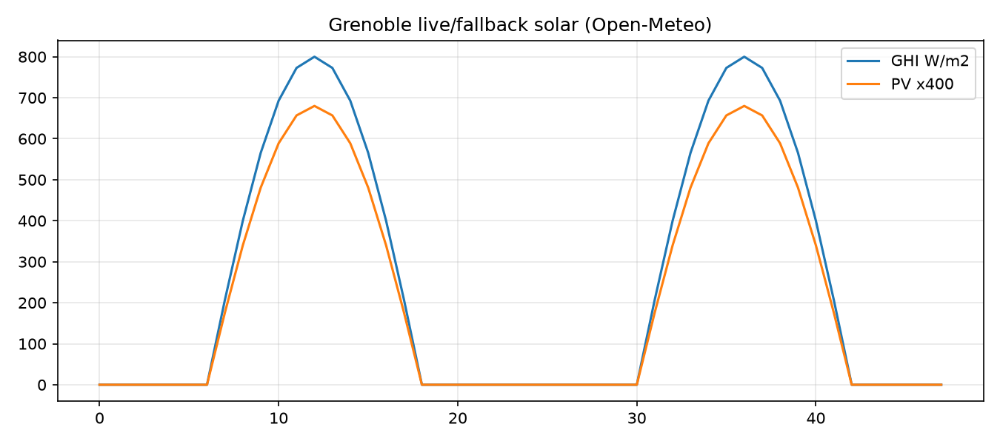

results/tables/lcos_sweep.csv + ragone.csv.CEO summary: every storage choice is a flexibility trade. This MIT repo proves it with runnable code — batteries, supercapacitors, hydrogen, solar+storage — on live data. Pick the right tool in an afternoon, not a quarter. Docker reproduces everything in 3 commands.
README autoplays the GIF. This page plays the full video. Both are generated from the same seeds as the experiments — numbers match.

PYTHONPATH=src python3 scripts/make_demo.pyNot a product, price list, or vendor ranking. Costs are public ranges for modelling. Safety, permits, and detailed engineering still need a professional.
docker compose build bench docker compose run --rm bench bash -c "pytest -q && python scripts/run_all.py --offline=0" ls results/figures results/tables data/raw
pip install -r requirements.txt PYTHONPATH=src pytest -q PYTHONPATH=src python3 scripts/run_all.py --offline=0 PYTHONPATH=src python3 scripts/make_demo.py
docker compose --profile live run --rm fetch-live cat data/raw/live_provenance.json
results/tables/lcos_sweep.csv + ragone.csv.src/esbench/joint.py).data/processed/pv_grenoble.csv.results/figures/hess.png.papers/METHODS.md → code.| Feature | What you get | Where |
|---|---|---|
| Ragone map | 14 technologies, Wh/kg + RTE ranges + maturity | results/tables/ragone.csv, ragone.png |
| Supercap sizing | Energy locus + power locus + feasible N(d); SODR optimum; 90/92/94% curves | supercap_locus.csv/png |
| Joint services | Threshold dispatch: peak cut + regulation served, peak-cap guard | data/processed/joint_day.csv |
| Hybrid predictor | 120 profiles; variation-coefficient vs saving, r=0.54 | hess.csv/png |
| PV + storage live | Grenoble solar, 5 kWh/2 kW dispatch, six indicators, deficit accounting | pv_grenoble.csv, pv_solar.png |
| Cost drivers | 30-point sweep: RTE × utilisation | lcos_sweep.csv, lcos.png |
| Live proof | 4 URLs with status/bytes/sha256/UTC | data/raw/live_provenance.json |
| Demo media | GIF (README) + MP4 (this page) + poster, same seeds | assets/ |






1. Run quick start. 2. Open figures in order above. 3. Tweak scripts/run_all.py (e.g. efficiency 90→94, watch d* move). 4. Read papers/METHODS.md + papers/BENCHMARK_SPEC.md. 5. Pick a PhD extension. You are now dangerous (in a good way).
Which battery? Fast cycling + efficiency → LFP. Long, rare backup → think capacity cost, not just RTE. Cold/off-grid → check temperature + autonomy.
Supercap or battery? Seconds-to-minutes spikes → supercap buffer + battery bulk. Check variation-coefficient first.
Hydrogen? Huge mass energy, poor round-trip (30–45%) + compression/liquefaction penalty. Multi-day/seasonal or not at all.
Why is my RTE >1? You spent initial stock. Use stock-corrected accounting (repo does).
MIT — use, modify, share. Please cite this repo + the public sources in README §11. To publish: push to GitHub, enable Pages (serve preview.html + assets/ + results/), attach demo.gif in README and demo.mp4 here.